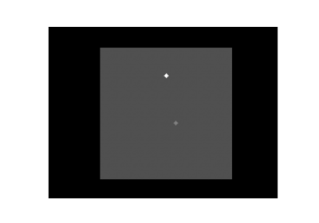
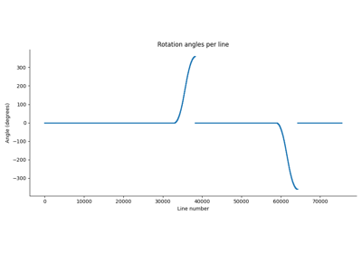
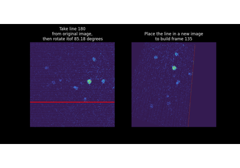
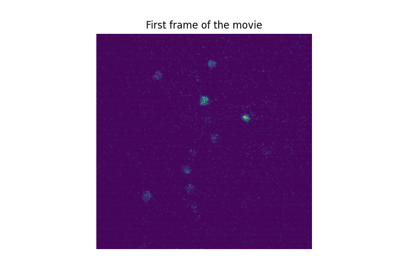
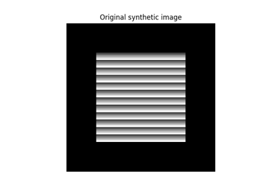
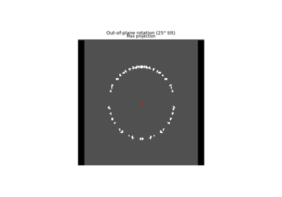

Examples#
Below is a gallery of examples using derotation which involve synthetic data.

Find center of rotation with simulated data
Find center of rotation with simulated data

Derotate a TIFF movie line-by-line using precomputed rotation angles
Derotate a TIFF movie line-by-line using precomputed rotation angles

Visualizing derotation line-by-line with custom hooks
Visualizing derotation line-by-line with custom hooks

Full pipeline on real data: derotation and center of rotation estimation
Full pipeline on real data: derotation and center of rotation estimation

Rotate and derotate a sample image
Rotate and derotate a sample image

Simulate out-of-plane rotation during line-scanning acquisition
Simulate out-of-plane rotation during line-scanning acquisition